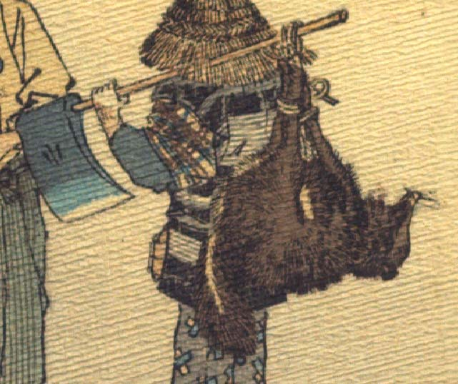

狸。前脚後脚を揃えて縄で縛られ、斧の柄に吊られている。斧を担いでいるのはきこりのような扮装をした狐である。
著作者：J.Dautremer／出典：親書誌：U426_nichibunken_0120：La victoire du petit renard／日付：2006／資源識別子：U426_nichibunken_0120_0005_0002
Copyright (c)2010- International Research Center for Japanese Studies, Kyoto, Japan. All rights reserved.